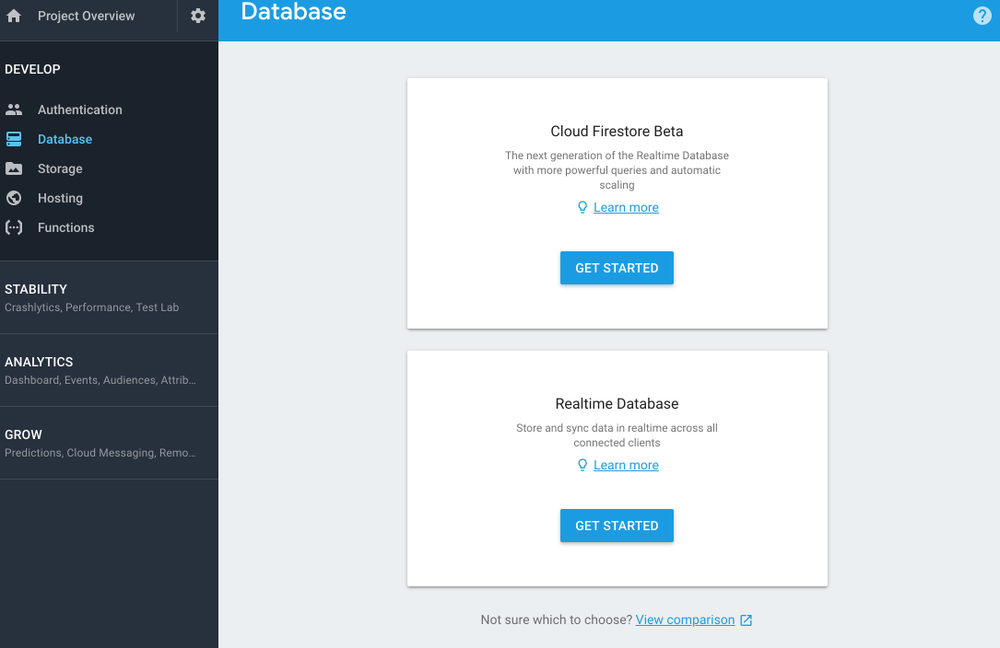
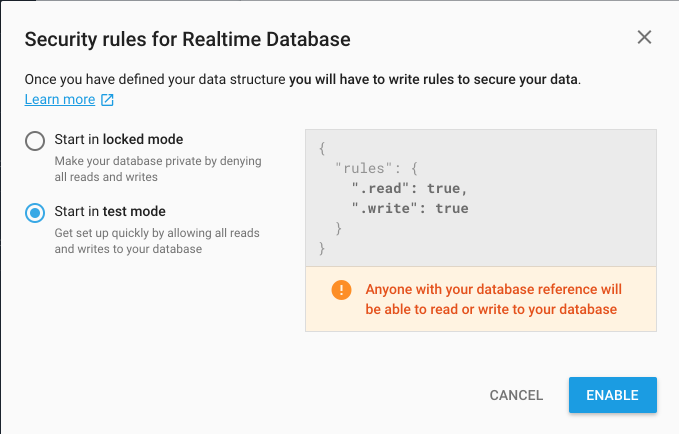
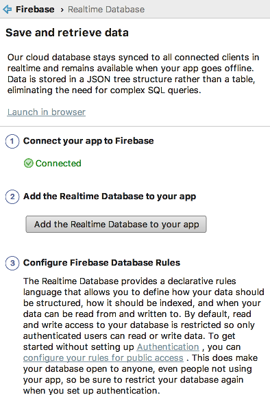
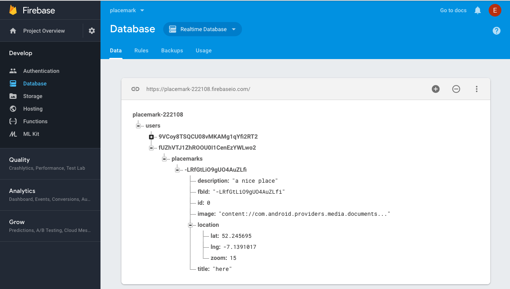
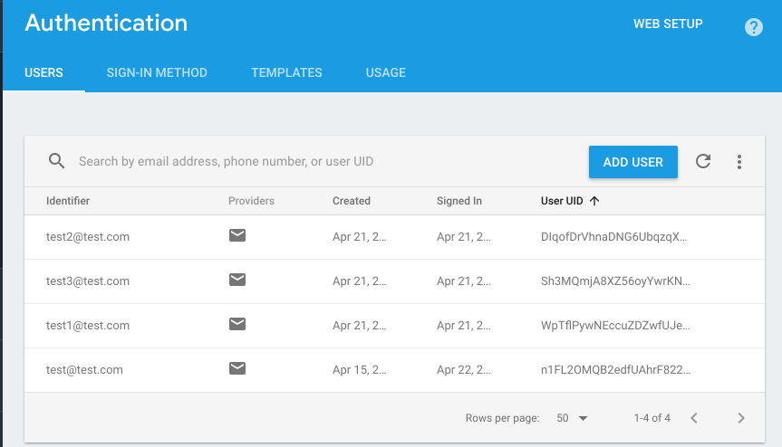

Objectives
Store placemarks in Firebase Realtime Database
Solutions
Exercise 1 : Logout
PlacemarkListPresenter
fun doLogout() {
FirebaseAuth.getInstance().signOut()
view?.navigateTo(VIEW.LOGIN)
}Exercise 2: Current User
Adjust the title of the PlacemarkListActivity - such that it displays the logged in users email:

Solution
Now that we are centralising the toolbar initialisation in BaseView, we can introduce this feature for all views:
BaseView
...
fun init(toolbar: Toolbar, upEnabled: Boolean) {
toolbar.title = title
setSupportActionBar(toolbar)
supportActionBar?.setDisplayHomeAsUpEnabled(upEnabled)
val user = FirebaseAuth.getInstance().currentUser
if (user != null) {
toolbar.title = "${title}: ${user.email}"
}
}
...Image Management
Currently we load all of the images using a helper method we have written for this purpose. We will replace this now with the Glide library:
This will work as as currently, but additionally it will also work with url of images on the public Internet. This will be part of our move to firebase later in this lab.
First, we define the version of Glide we wish to use:
build.gradle
...
glide_version = '4.8.0'
...
implementation "com.github.bumptech.glide:glide:$glide_version"
...
...Now we can introduce the glide library wherever we are displaying images:
PlacemarkAdapter
Replace:
itemView.imageIcon.setImageBitmap(readImageFromPath(itemView.context, placemark.image))with
Glide.with(itemView.context).load(placemark.image).into(itemView.imageIcon);PlacemarkView
Replace:
placemarkImage.setImageBitmap(readImageFromPath(this, placemark.image))with
Glide.with(this).load(placemark.image).into(placemarkImage);PlacemarkMqpView
Replace:
imageView.setImageBitmap(readImageFromPath(this, placemark.image))with:
Glide.with(this).load(placemark.image).into(imageView);Rebuild and test the app now. It should behave as before.
PlacemarkMapPresenter
We need one other small adjustment - currently we have this line in PlacemarkMapPresenter::doPopulateMap()
map.addMarker(options).tag = it.idThis stores a tag to refer to the placemark associated with the marker we have just placed on the map. Change this to the following:
map.addMarker(options).tag = itNow in PlacemarkMapPresenter::onMarkerSelected(), replace
val tag = marker.tag as Long
val placemark = app.placemarks.findById(tag)with
val placemark = marker.tag as PlacemarkModelThe reason we are making this adjustment is because of the Firebase adjustments we will shortly make to the PlacemarkModel
Preparing for Firebase
We need to make a number of small changes to the application in order to prepare for incorporating Firebase storage of placemarks.
Managing the Firebase ID
In PlacemarkModel, we need an additional ID - fbId - to record the Firebase ID of each placemark. Unlike the existing id, which is a Long, the firebase id is a string:
PlacemarkModel
package org.wit.placemark.models
import android.os.Parcelable
import androidx.room.Embedded
import androidx.room.Entity
import androidx.room.PrimaryKey
import kotlinx.android.parcel.Parcelize
@Parcelize
@Entity
data class PlacemarkModel(@PrimaryKey(autoGenerate = true) var id: Long = 0,
var fbId : String = "",
var title: String = "",
var description: String = "",
var image: String = "",
@Embedded var location : Location = Location()): Parcelable
@Parcelize
data class Location(var lat: Double = 0.0,
var lng: Double = 0.0,
var zoom: Float = 0f) : ParcelableClearing Placemarks between user logins
As we are now supporting multiple logins - then we need a way of clearing the placemarks between different users accessing the app.
PlacemarkMemStore
fun clear()PlacemarkMemStore
override fun clear() {
placemarks.clear()
}PlacemarkStoreRoom
override fun clear() {
}PlacemarkJSONStore
override fun clear() {
placemarks.clear()
}We keep the PlacemarkStoreRoom implementation empty for the moment.
Firebase Database
In your Firebase Application Console, select Database:

And press Get Started on Realtime Database:

Be sure to select Start in test mode as shown above.

This is a view into your database - you will see in real time here any objects you insert. Also, take note of the url:
https://placemark-XXXXd.firebaseio.coThis will be used in your application configuration. To establish the connection, in Studio select Tools->Firebase->Realtime Database

Press connect (screen shot above shows result of pressing connect). This is all you need to do at this stage. If you like, you can verify that the connection has been made. Do this by locating the following file:
- app/google-services.json
It may look something like this:
{
"project_info": {
"project_number": "4283XXXXX",
"firebase_url": "https://placemark-XXXXd.firebaseio.com",
"project_id": "placemark-XXXd",
},
"client": [
{
"client_info": {
"mobilesdk_app_id": "1:428338485028:android:634c4XXXce143",
"android_client_info": {
"package_name": "org.wit.placemark"
}
},
"oauth_client": [
{
"client_id": "4283XXXXX028-ntqXXXXXXXXXl9ot6ok3r.apps.googleusercontent.com",
"client_type": 1,
"android_info": {
"package_name": "org.wit.placemark",
"certificate_hash": "bcaa865ad78XXXXXXXXX731db4da8b"
}
},
{
"client_id": "42833848XXXXXX5cup7XXXXXXk8s.apps.googleusercontent.com",
"client_type": 3
}
],
"api_key": [
{
"current_key": "AIzaSyBXXXXXXXXXXXoTeWhTqfKxbI"
}
],
"services": {
"analytics_service": {
"status": 1
},
"appinvite_service": {
"status": 2,
"other_platform_oauth_client": [
{
"client_id": "428338XXXXXXXXXXXXXXXXXX1e4kk8s.apps.googleusercontent.com",
"client_type": 3
}
]
},
"ads_service": {
"status": 2
}
}
}
],
"configuration_version": "1"
}A Firebase URL should be in the opening info object.
FireStore
Create a new package called org.wit.placemark.models.firebase, and introduce this new class, an implementation of PlacemarkStore:
PlacemarkFireStore
package org.wit.placemark.models.firebase
import android.content.Context
import com.google.firebase.auth.FirebaseAuth
import com.google.firebase.database.*
import org.jetbrains.anko.AnkoLogger
import org.wit.placemark.models.PlacemarkModel
import org.wit.placemark.models.PlacemarkStore
class PlacemarkFireStore(val context: Context) : PlacemarkStore, AnkoLogger {
val placemarks = ArrayList<PlacemarkModel>()
lateinit var userId: String
lateinit var db: DatabaseReference
suspend override fun findAll(): List<PlacemarkModel> {
return placemarks
}
suspend override fun findById(id: Long): PlacemarkModel? {
val foundPlacemark: PlacemarkModel? = placemarks.find { p -> p.id == id }
return foundPlacemark
}
suspend override fun create(placemark: PlacemarkModel) {
val key = db.child("users").child(userId).child("placemarks").push().key
placemark.fbId = key!!
placemarks.add(placemark)
db.child("users").child(userId).child("placemarks").child(key).setValue(placemark)
}
suspend override fun update(placemark: PlacemarkModel) {
var foundPlacemark: PlacemarkModel? = placemarks.find { p -> p.fbId == placemark.fbId }
if (foundPlacemark != null) {
foundPlacemark.title = placemark.title
foundPlacemark.description = placemark.description
foundPlacemark.image = placemark.image
foundPlacemark.location = placemark.location
}
db.child("users").child(userId).child("placemarks").child(placemark.fbId).setValue(placemark)
}
suspend override fun delete(placemark: PlacemarkModel) {
db.child("users").child(userId).child("placemarks").child(placemark.fbId).removeValue()
placemarks.remove(placemark)
}
override fun clear() {
placemarks.clear()
}
fun fetchPlacemarks(placemarksReady: () -> Unit) {
val valueEventListener = object : ValueEventListener {
override fun onCancelled(error: DatabaseError) {
}
override fun onDataChange(dataSnapshot: DataSnapshot) {
dataSnapshot.children.mapNotNullTo(placemarks) { it.getValue<PlacemarkModel>(PlacemarkModel::class.java) }
placemarksReady()
}
}
userId = FirebaseAuth.getInstance().currentUser!!.uid
db = FirebaseDatabase.getInstance().reference
placemarks.clear()
db.child("users").child(userId).child("placemarks").addListenerForSingleValueEvent(valueEventListener)
}
}This is an implementation of our PlacemarkStore interface - which stores/retrieves placemarks from the Firebase database.
It implements all the PlacemarkStore methods + one new method not specified in the interface:
fun fetchPlacemarks(placemarksReady: () -> Unit) {
val valueEventListener = object : ValueEventListener {
override fun onCancelled(error: DatabaseError) {
}
override fun onDataChange(dataSnapshot: DataSnapshot) {
dataSnapshot.children.mapNotNullTo(placemarks) { it.getValue<PlacemarkModel>(PlacemarkModel::class.java) }
placemarksReady()
}
}
userId = FirebaseAuth.getInstance().currentUser!!.uid
db = FirebaseDatabase.getInstance().reference
placemarks.clear()
db.child("users").child(userId).child("placemarks").addListenerForSingleValueEvent(valueEventListener)
}This is a method to fetch placemarks, and trigger a callback (placemarkReady) when the placemakrs have been retrieved. We will need to explicitly call this method when we are log in (next step).
Login
This is a revised Login activity:
LoginAPresenter
package org.wit.placemark.views.login
import com.google.firebase.auth.FirebaseAuth
import org.jetbrains.anko.toast
import org.wit.placemark.models.firebase.PlacemarkFireStore
import org.wit.placemark.views.BasePresenter
import org.wit.placemark.views.BaseView
import org.wit.placemark.views.VIEW
class LoginPresenter(view: BaseView) : BasePresenter(view) {
var auth: FirebaseAuth = FirebaseAuth.getInstance()
var fireStore: PlacemarkFireStore? = null
init {
if (app.placemarks is PlacemarkFireStore) {
fireStore = app.placemarks as PlacemarkFireStore
}
}
fun doLogin(email: String, password: String) {
view?.showProgress()
auth.signInWithEmailAndPassword(email, password).addOnCompleteListener(view!!) { task ->
if (task.isSuccessful) {
if (fireStore != null) {
fireStore!!.fetchPlacemarks {
view?.hideProgress()
view?.navigateTo(VIEW.LIST)
}
} else {
view?.hideProgress()
view?.navigateTo(VIEW.LIST)
}
} else {
view?.hideProgress()
view?.toast("Sign Up Failed: ${task.exception?.message}")
}
}
}
fun doSignUp(email: String, password: String) {
view?.showProgress()
auth.createUserWithEmailAndPassword(email, password).addOnCompleteListener(view!!) { task ->
if (task.isSuccessful) {
view?.hideProgress()
view?.navigateTo(VIEW.LIST)
} else {
view?.hideProgress()
view?.toast("Sign Up Failed: ${task.exception?.message}")
}
}
}
}The key here is the code dealing with a successful login:
if (task.isSuccessful) {
if (fireStore != null) {
fireStore!!.fetchPlacemarks {
view?.hideProgress()
view?.navigateTo(VIEW.LIST)
}
}
}In the above, we are checking to see if we are using the fireStore PlacemarkStore implementation, and if so, we fetch the placemarks and will be notified when they arrive. If we are not using the fireStore, then we just launch PlacemarkListActivity as normal.
Finally, on logout we need to clear the placemarks:
fun doLogout() {
FirebaseAuth.getInstance().signOut()
app.placemarks.clear()
view?.navigateTo(VIEW.LOGIN)
}Console
Create the PlacemarkFireStore now in MainApp:
class MainApp : Application(), AnkoLogger {
lateinit var placemarks: PlacemarkStore
override fun onCreate() {
super.onCreate()
//placemarks = PlacemarkJSONStore(applicationContext)
//placemarks = PlacemarkStoreRoom(applicationContext)
placemarks = PlacemarkFireStore(applicationContext)
info("Placemark started")
}
}Run the app now, log in and create some placemarks.
Keep an eye on the Database console:

You should see the placemarks you create populating here. Each users placemarks are grouped under the user id. And individual placemarks are under their own unique id.
User Ids can be cross-referenced on the Authentication panel:

Experiment with various accounts + placemarks now. Verify that when you log in you get the placemarks relevant to the logged in user.
Also - note that the images are still stored locally - examine the image path. So, although they will display as normal - they will not be available if you change emulators.
Perhaps try this now to verify that placemark images are localised to a specific phone.